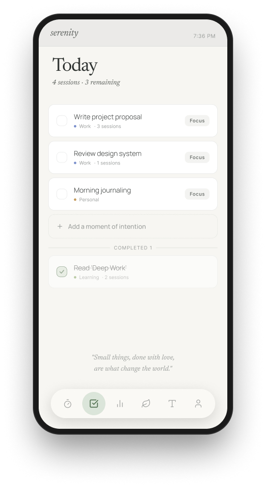
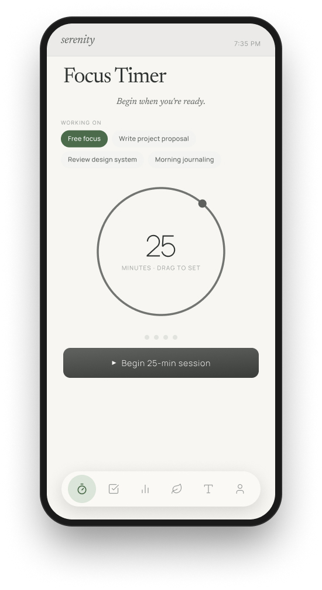
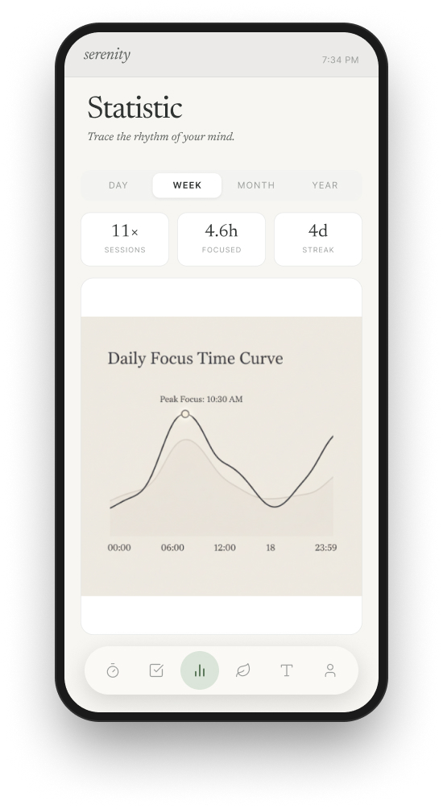
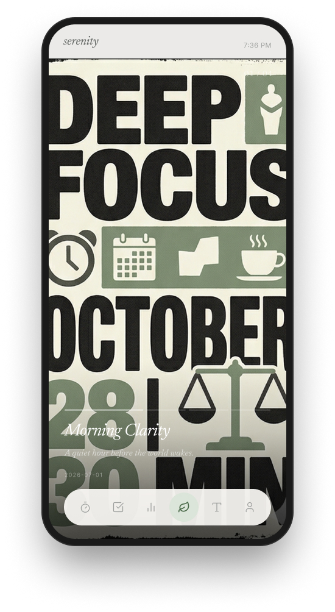
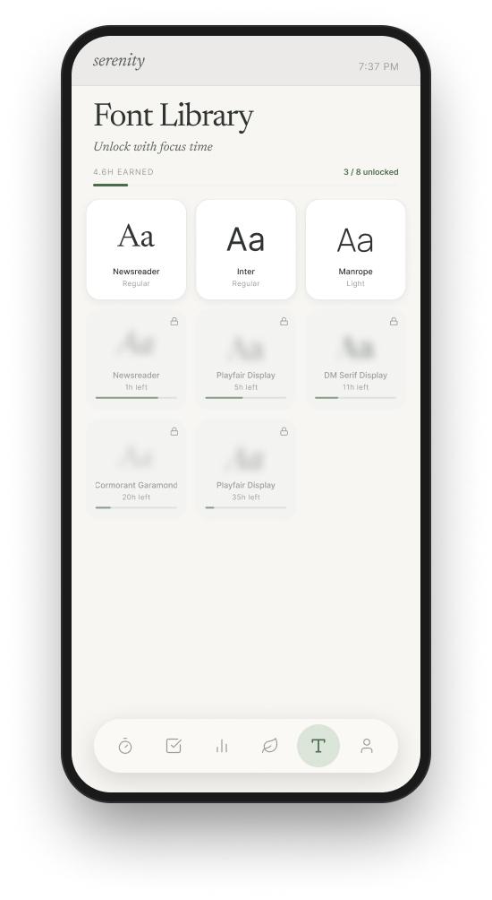
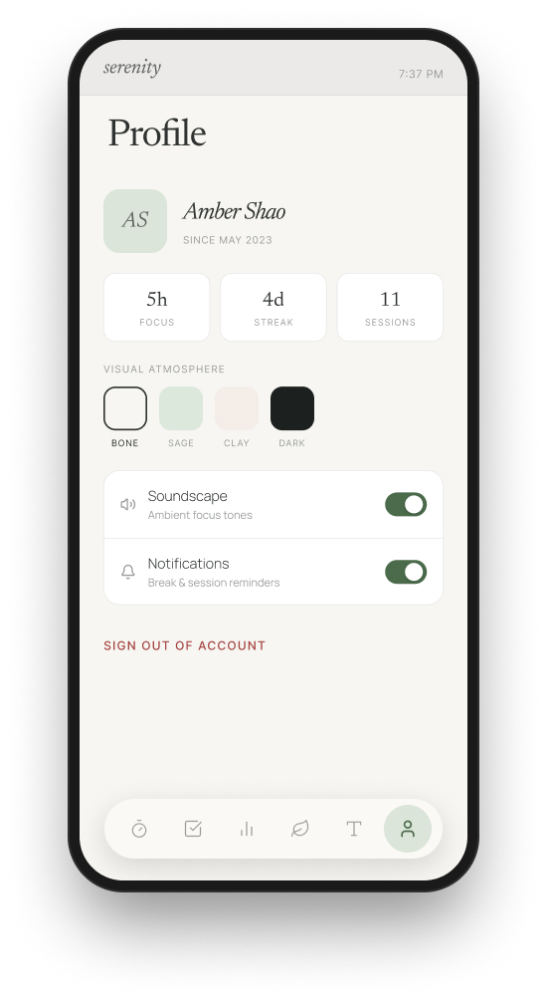

Serenity — A Mindful Focus App for Calm Productivity

Overview
Serenity is a concept design for a mobile focus app that reframes productivity as a calm, intentional ritual. Instead of pushing users with streak pressure and aggressive metrics, it pairs a gentle focus timer and daily intentions with an editorial, typography-led aesthetic — so the time you spend focusing feels like something worth looking forward to.
The product connects four moments of a focus habit into one quiet flow: setting intentions for the day, running a focus session, reflecting on the rhythm of that focus, and being rewarded with craft rather than guilt.
The Idea
Typography as the reward, not just the style.
Serenity's signature idea is turning typography into the reward loop. Focus time unlocks new typefaces in a Font Library, and every completed session can become a printable typographic poster — a small keepsake that makes a quiet hour of focus feel tangible and worth repeating.
Designing for Calm
01
Calm Over Pressure
Soft sage tones, generous whitespace, and gentle copy — “Begin when you're ready” — replace the urgency that most productivity apps rely on.
02
Intention First
The day starts as a short list of intentions rather than a backlog, and each one closes with a quiet quote to ground the ritual.
03
Reward, Not Guilt
Progress is shown as a rhythm curve and unlockable craft, so a missed day reads as a pause — not a failure.
04
Editorial Typography
A serif display voice and print-inspired layout make the app feel less like a tool and more like a quiet magazine you return to.
Core Features
Focus Timer
A drag-to-set circular timer. Run a free-focus session or attach it to a specific intention, then begin at your own pace.
Today & Intentions
A calm daily list tagged Work, Personal, or Learning. Each item can launch a focus session, and the day closes with a rotating quote.
Statistics
“Trace the rhythm of your mind.” Sessions, focused hours, and streaks sit above a Daily Focus Time Curve that surfaces your peak focus hour.
Focus Posters
Each session becomes an editorial typographic poster — a named, dated keepsake like “Deep Focus · 30 min · Morning Clarity” that you can save or share.
Font Library
Earn typefaces with accumulated focus time. A gentle, gamified reward that lets you personalize the app's reading experience as you go.
Profile & Atmosphere
Switch Visual Atmosphere themes (Bone, Sage, Clay, Dark), toggle an ambient Soundscape, and manage gentle session reminders.
The Screens

Today
Daily intentions & a closing quote

Focus Timer
Drag-to-set, begin when ready

Statistic
Focus rhythm & peak hour

Focus Poster
A session turned into a keepsake

Font Library
Unlock typefaces with focus time

Profile
Atmosphere, soundscape & stats
Design Takeaways